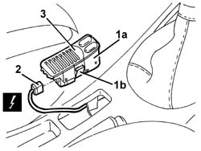

7040L28 TUNNEL SWITCH PANEL - R R
- Path
- Procedures > 70 FITTINGS > 7040 BODYSHELL INTERIOR TRIMS AND FITTINGS > 7040L CABIN FLOOR COVERING > 7040L28 TUNNEL SWITCH PANEL - R R
- Kind
- repair procedure (removal / refitting; the operation number is the code)
- Applies to
- all engines; all production periods
- Interactive page
- https://sloeber94.github.io/elrnDB-aGt/en/#/125001892
Applies to: all engines; all production periods
 Removing
Removing
 Refitting
Refitting1. Remove the switch panel (1a) from the retainers (1b).
2. Disconnect the electrical connection.
Name | Connector | |
|---|---|---|
2 | Switches on tunnel | See H35 SWITCHES ON TUNNEL ( CONNECTORS ) |
3. Recover the panel.

Applies to: all engines; all production periods
Refitting
RemovingCheck that the switch panel is not damaged.
Connect the electrical connection.
Fit the panel and engage the retainers.
Check that the switches are working.
Topics that link to this page (10)
- 5010B56 DUCT BETWEEN CLIMATE CONTROL SYSTEM HOUSING AND AIR DUCT TO REAR SEATS R R
- 5040D90 AIR CONDITIONER SYSTEM WIRING BUNDLE - R R
- 5505C34 INTERGRATED INSTRUMENT UNDER FACIA FRONT AIR BAG WIRING - R R
- 5505C41 CABIN WIRING - R R
- 7040A97 FACIA TRIM SUPPORT BEAM - R R
- 7040L10 CABIN FLOOR CARPET - R R
- 7040L13 PASSENGER COMPARTMENT FLOOR SOUNDPROOFING - R R
- 7040L20 TUNNEL TRIM - R R
- 7065C72 FRONT CIGAR LIGHTER SOCKET/POWER POINT - FASTEN
- 7065C73 CIGAR LIGHTER BULB - R R - INCLUDES R R CIGAR LIGHTER